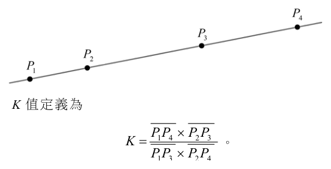
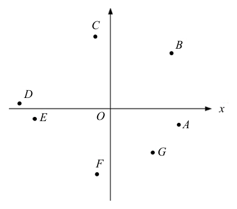

開卷有益 ／
學科能力測驗 ／ 數學B ／ 111 年111 年學科能力測驗數學B試題與答案
這一頁是民國 111 年學科能力測驗數學B的整份歷屆試題，共 20 題，題目與標準答案出自大考中心 學測歷年試題（依著作權法 §9，考試試題不受著作權保護），其中 20 題附有詳解。以下逐題列出題幹、選項與答案；要計時作答或記錄成績，請用線上練習。
線上作答這一科 →
全部 20 題
第 1 題
試問有多少個整數 \(x\) 滿足 \(2|x| + x < 10\)？
（A） 13 個（B） 14 個（C） 15 個（D） 16 個（E） 無窮多個答案：（A）
詳解與考點 正解：含 |x| 的不等式須依 x 的正負分段，因為 |x| 在 x≥0 時等於 x，在 x<0 時等於 -x。當 x≥0 時，2|x|+x=2x+x=3x<10，故 x<10/3；此時整數 x=0、1、2、3，共 4 個。當 x<0 時，2|x|+x=2(-x)+x=-x<10，兩邊乘以 -1 不等號反向，得 x>-10；合併 x<0，整數 x=-1、-2、…、-9，共 9 個。總數為 4+9=13 個，因此 A：13 個為正解。
B：若把嚴格不等式 x>-10 誤寫成 x≥-10，就會多納入 x=-10，算成 4+10=14 個；但代入得 2|-10|+(-10)=10，不小於 10，故 B 錯誤。
C：若負數段誤納 x=-10，並把 x<10/3 錯看成可取到 x=4，會列成負數 10 個、非負整數 5 個，共 10+5=15 個；其實 x=-10 與 x=4 代入都不滿足，故 C 錯誤。
D：若把負數段錯列為 -10≤x≤0，共 11 個，又把非負段錯列為 0≤x≤4，共 5 個，還重複計入 x=0，就會得到 11+5=16 個；正確分段應為 -10<x<0 與 0≤x<10/3，故 D 錯誤。
E：當 x≥0 時有 x<10/3，當 x<0 時有 x>-10，解集上下皆有界，所以整數解不可能有無窮多個，E 錯誤。
本題考點：絕對值不等式——以 x≥0、x<0 分段代換 |x|；不等式判準——乘除負數時不等號須反向，最後合併各段的整數解並檢查端點是否滿足。
第 2 題
某燈會布置變色閃燈，每次啟動後的閃燈顏色會依照以下的順序做週期性變換：藍-白-紅-白-藍-白-紅-白-藍-白-紅-白……，每四次一循環，其中藍光每次持續 5 秒，白光每次持續 2 秒，而紅光每次持續 6 秒。假設換燈號的時間極短可被忽略，試選出啟動後第 99 至 101 秒之間的燈號。
（A） 皆為藍燈（B） 皆為白燈（C） 皆為紅燈（D） 先亮藍燈再亮白燈（E） 先亮白燈再亮紅燈答案：（C）
詳解與考點 正解：燈號每 4 次一循環，需先算完整循環時間，再把第 99 至 101 秒換成循環內相對時刻。藍、白、紅、白的持續時間依序為 5、2、6、2 秒，一個循環=5+2+6+2=15 秒。循環內時段為：藍 0 至 5 秒、第一段白 5 至 7 秒、紅 7 至 13 秒、第二段白 13 至 15 秒。 99÷15=6 餘 9，故第 99 秒進入第 7 個循環的第 9 秒；第 99 至 101 秒對應循環內第 9 至 11 秒。因 7≤9 至 11≤13，皆在紅燈時段，故 C 為正解。
A：藍燈只在每循環第 0 至 5 秒；第 9 至 11 秒不在此區間，A 錯誤。
B：白燈在第 5 至 7 秒及第 13 至 15 秒；第 9 至 11 秒均不在其中，B 錯誤。
D：第 9 至 11 秒全落在紅燈，未跨越藍燈或白燈的切換點，D 錯誤。
E：第 9 至 11 秒全落在紅燈，未跨越白燈或紅燈的切換點，E 錯誤。
本題考點：週期問題——先求一個完整循環的總時間，再以除法餘數定位循環內時刻；同一顏色若分成兩段，必須分開列出區間，不能合併計算。
第 3 題
有八棟大廈排成一列，由左至右分別編號 1,2,3,4,5,6,7,8。今電信公司想選取其中三棟大廈的屋頂分別設立一座電信基地台。若基地台不能設立於相鄰的兩棟大廈，以免訊號互相干擾，試問在 3 號大廈不設立基地台的情況下，有多少種設立基地台的選取方法？
（A） 12（B） 13（C） 20（D） 30（E） 35答案：（B）
詳解與考點 正解：本題要選 3 棟且任兩棟不相鄰，並排除 3 號；先用「排成一列取 k 個不相鄰位置」的公式求總數，再扣除包含 3 號的情況最直接。B：先不管 3 號限制，8 棟中取 3 棟且彼此不相鄰的數目為 C(8−3+1,3)=C(6,3)=20。若選到 3 號，2 號、4 號不能選，剩下從 {1,5,6,7,8} 再選 2 棟；合法組合是（1,5）、（1,6）、（1,7）、（1,8）、（5,7）、（5,8）、（6,8），共 7 種。因此不選 3 號的合法選法為 20−7=13 種，故 B 為正解。直接列舉也可得（1,4,6）、（1,4,7）、（1,4,8）、（1,5,7）、（1,5,8）、（1,6,8）、（2,4,6）、（2,4,7）、（2,4,8）、（2,5,7）、（2,5,8）、（2,6,8）、（4,6,8），合計 13 種。
A：12=13−1，比正確計數少 1；列舉時漏掉 1 組，或誤把 2 號與 4 號視為相鄰而處理不當，都可能造成少算，A 錯誤。
C：20 是未加入「3 號不設基地台」限制時的總數 C(6,3)=20；應再扣除含 3 號的 7 種，20−7=13，C 錯誤。
D：30 大於未限制時的 20 種合法選法；30−20=10，顯示計數時多算 10 種，通常是誤用排列或重複計數，D 錯誤。
E：C(7,3)=7×6×5÷(3×2×1)=35，是去掉 3 號後從其餘 7 棟任取 3 棟的數目，未扣除相鄰限制；35−13=22 種其實含有相鄰大廈，E 錯誤。
本題考點：不相鄰選取計數——n 個排成一列的位置取 k 個彼此不相鄰，可用 C(n−k+1,k)；限制條件處理——先算全部合法情況，再扣除含指定位置的情況，並逐步檢驗相鄰位置是否已排除。
第 4 題
在坐標平面上，已知向量 \( \overrightarrow{PQ} = \left( \log\frac{1}{5},\, -10^{-5} \right) \)，其中點 \( P \) 的坐標為 \( \left( \log\frac{1}{2},\, 2^{-5} \right) \)。試選出正確的選項。
（A） 點 \( Q \) 在第一象限（B） 點 \( Q \) 在第二象限（C） 點 \( Q \) 在第三象限（D） 點 \( Q \) 在第四象限（E） 點 \( Q \) 位於坐標軸上答案：（B）
詳解與考點 正解：題幹給點 P 與向量 PQ，應以 Q＝P＋PQ 分別求兩坐標的正負。Q 的橫坐標＝log（1／2）＋log（1／5）＝log［（1／2）×（1／5）］＝log（1／10）＝−1＜0。縱坐標＝2^−5−10^−5＝1／32−1／100000＝0.03125−0.00001＝0.03124＞0。因此 Q 為（負，正），在第二象限，故 B 正確。
A：第一象限須橫、縱坐標皆正，但 Q 的橫坐標為 −1，故錯誤。
C：第三象限須兩坐標皆負，但 Q 的縱坐標為正，故錯誤。
D：第四象限須橫正縱負，與計算結果不符。
E：Q 的兩坐標皆非 0，不在坐標軸上。
本題考點：向量坐標——終點＝起點＋位移向量；對數運算——log a＋log b＝log（ab）；象限判定——依橫、縱坐標正負判別。
第 5 題
設矩陣 \( A=\begin{bmatrix} 1 & 1 \\ 1 & -1 \end{bmatrix} \)，若 \( A^7-3A=\begin{bmatrix} a & b \\ c & d \end{bmatrix} \)，則 \( a+b+c+d \) 之值為下列哪一個選項？
（A） \( -8 \)（B） \( -5 \)（C） \( 5 \)（D） \( 8 \)（E） \( 10 \)答案：（E）
詳解與考點 正解：題眼是矩陣 A 的平方可化為單位矩陣倍數，先算 A² 可避免逐次相乘。A²＝[[1×1＋1×1，1×1＋1×（−1）]，[1×1＋（−1）×1，1×1＋（−1）×（−1）]]＝[[2，0]，[0，2]]＝2I。A⁷＝A×（A²）³＝A×（2I）³＝A×8I＝8A。A⁷−3A＝8A−3A＝5A＝[[5，5]，[5，−5]]，所以 a＋b＋c＋d＝5＋5＋5−5＝10，故 E 正確。
A：−8 與矩陣元素和 10 不符。
B：−5 與矩陣元素和 10 不符。
C：5 只相當於未把四個元素全部相加，故錯誤。
D：8 是 A⁷ 的倍數係數，未扣除 3A，故錯誤。
本題考點：矩陣冪——若 A²＝kI，則 A^(2m＋1)＝k^mA；矩陣運算——先逐項求 A²，再代入線性組合。
第 6 題
假設地球為一半徑 \(r\) 的球體，有一質點自甲地沿著該地所在經線往北移動，抵達北極點時移動所經過的弧線之長度為 \(\dfrac{7}{12}\pi r\)。試問哪一個選項最可能是甲地的位置？
（A） 東經 75°、北緯 15°（B） 東經 30°、南緯 75°（C） 東經 75°、南緯 15°（D） 西經 30°、北緯 75°（E） 西經 15°、南緯 30°答案：（C）
詳解與考點 正解：沿經線北行到北極的距離是球面弧長，題眼是 s＝7πr/12，所以先用 s＝rθ 求圓心角。θ＝s/r＝7π/12＝105°。北極到緯度 θ 的角距為 90°−θ，設甲地緯度為 φ，90°−φ＝105°，所以 φ＝−15°，即南緯 15°。經度不影響沿經線到北極的弧長，只有 C 為東經 75°、南緯 15°，故 C 正確。
A：北緯 15°到北極的角距＝90°−15°＝75°＝5π/12，弧長＝5πr/12，不是 7πr/12，A 錯誤。
B：南緯 75°到北極的角距＝90°−（−75°）＝165°＝11π/12，弧長＝11πr/12，不是 7πr/12，B 錯誤。
D：北緯 75°到北極的角距＝90°−75°＝15°＝π/12，弧長＝πr/12，不是 7πr/12，D 錯誤。
E：南緯 30°到北極的角距＝90°−（−30°）＝120°＝2π/3＝8π/12，弧長＝8πr/12，不是 7πr/12，E 錯誤。
本題考點：球面弧長——s＝rθ，θ 必須用弧度；餘緯——北極至某地的角距＝90°−緯度，南緯以負值代入；經度判讀——同一緯度沿任一經線到北極的距離相同。
第 7 題
畫家把空間景物用單點透視法畫在平面的畫紙上時，有以下原則要遵守：
一、空間中的直線畫在畫紙上必須是一條直線。
二、空間直線上點的相關位置必須和畫紙所畫的點的相關位置一致。
三、空間直線上的任四個相異點的 \(K\) 值，和畫紙所畫的四個點之 \(K\) 值必須相同，其中 \(K\) 值的定義如下：直線上任給四個有順序的相異點 \(P_1, P_2, P_3, P_4\)，如下圖。
其所對應的 \(K\) 值定義為 \(K=\dfrac{\overline{P_1P_4}\times\overline{P_2P_3}}{\overline{P_1P_3}\times\overline{P_2P_4}}\)。
今某畫家依照以上原則，將空間中一直線及該線上的四相異點 \(Q_1, Q_2, Q_3, Q_4\) 描繪在畫紙上，其中 \(\overline{Q_1Q_2}=\overline{Q_2Q_3}=\overline{Q_3Q_4}\)。若將畫紙上所畫的直線視為一數線，並將線上的點用坐標來表示，則在下列選項的四個坐標中，試問哪一組最可能是該四點在畫紙上的坐標？

（A） 1, 2, 4, 8（B） 3, 4, 6, 9（C） 1, 5, 8, 9（D） 1, 2, 4, 9（E） 1, 7, 9, 10答案：（E）
詳解與考點 正解：題幹規定投影前後交比 K 不變；空間四點等距，可設坐標為 1，2，3，4。K＝［（4−1）×（3−2）］／［（3−1）×（4−2）］＝（3×1）／（2×2）＝3／4。E：坐標 1，7，9，10 的 K＝［（10−1）×（9−7）］／［（9−1）×（10−7）］＝（9×2）／（8×3）＝18／24＝3／4，故正確。
A：坐標 1，2，4，8 的 K＝［（8−1）×（4−2）］／［（4−1）×（8−2）］＝14／18＝7／9，不等於 3／4。
B：坐標 3，4，6，9 的 K＝［（9−3）×（6−4）］／［（6−3）×（9−4）］＝12／15＝4／5，不等於 3／4。
C：坐標 1，5，8，9 的 K＝［（9−1）×（8−5）］／［（8−1）×（9−5）］＝24／28＝6／7，不等於 3／4。
D：坐標 1，2，4，9 的 K＝［（9−1）×（4−2）］／［（4−1）×（9−2）］＝16／21，不等於 3／4。
本題考點：交比不變性——單點透視前後，依原有順序計算的 K 值相同；交比計算——K＝P1P4×P2P3／（P1P3×P2P4），距離須以同一數線坐標相減求得。
第 8 題（多選）
有一射擊遊戲，將發射台設置於坐標平面的原點，並放置三個半徑為 1 的圓盤靶子，其圓心分別為 \((2,2)\)、\((4,6)\) 與 \((8,1)\)。玩家選定一正數 \(a\)，並按下按鈕後，發射台將向點 \((1,a)\) 方向發射一道雷射光束（形成一射線）。假設雷射光束擊中靶子後可以穿透並繼續沿原方向前進（削過圓盤邊緣也視為擊中）。試選出正確的選項。
（A） 雷射光束落在通過原點且斜率為 \(a\) 的直線上（B） 若 \(a=\dfrac{3}{2}\)，則雷射光束會擊中圓心為 \((4,6)\) 的圓盤靶子（C） 玩家可以僅發射一道雷射光束就擊中三個圓盤靶子（D） 玩家至少需要發射三道雷射光束才可擊中三個圓盤靶子（E） 玩家發射一道雷射光束後，若擊中圓心為 \((8,1)\) 的圓盤靶子，則 \(a\le\dfrac{16}{63}\)答案：（A）（B）（E）
詳解與考點 正解：雷射由原點朝(1,a)發射，方向向量為(1,a)，故射線在直線y=ax上；擊中圓盤的判準是圓心到直線的距離不超過半徑1。A：方向斜率=a/1=a，雷射光束落在通過原點、斜率為a的直線上，正確。B：a=3/2時，直線為y=(3/2)x；代入圓心(4,6)，(3/2)×4=6，直線通過圓心，必擊中半徑1的圓盤，正確。E：靶心(8,1)到8a−y=0的距離為|8a−1|/√(a²+1)。擊中條件為|8a−1|/√(a²+1)≤1；平方得(8a−1)²≤a²+1；64a²−16a+1≤a²+1；63a²−16a≤0；a(63a−16)≤0。因a>0，得a≤16/63，正確。
C：要同時擊中第三靶，E的計算已得a≤16/63。第一靶圓心為(2,2)，距離條件為|2a−2|/√(a²+1)≤1；平方得(2a−2)²≤a²+1；4a²−8a+4≤a²+1；3a²−8a+3≤0。其兩根為(4−√7)/3與(4+√7)/3，所以第一靶要求a≥(4−√7)/3。又(4−√7)/3>16/63，故不可能同時擊中第一、第三靶，更不可能一束擊中三靶，C錯誤。
D：a=3/2時，光束通過(4,6)；第一靶圓心(2,2)到3x−2y=0的距離為|6−4|/√13=2/√13<1，故同一束已可擊中前兩靶，另發射一束即可處理第三靶，最多需要兩束，不是至少三束，錯誤。它看起來對，是因為三個圓心不共線；但靶子有半徑，且一束光可穿透圓盤後繼續前進。
本題考點：射線方程式——由原點朝(1,a)的方向為y=ax；圓線相交判準——圓心到直線距離≤半徑；不等式解法——距離式平方後須結合a>0判定範圍。
第 9 題
設 \( f(x)=2x^3-3x+1 \)，下列關於函數 \( y=f(x) \) 的圖形之描述，試選出正確的選項。
（A） \( y=f(x) \) 的圖形通過點 \( (1,0) \)（B） \( y=f(x) \) 的圖形與 \( x \) 軸只有一個交點（C） 點 \( (1,0) \) 是 \( y=f(x) \) 的圖形之對稱中心（D） \( y=f(x) \) 的圖形在對稱中心附近會近似於一直線 \( y=3x-3 \)（E） \( y=3x^3-6x^2+2x \) 的圖形可由 \( y=f(x) \) 的圖形經適當平移得到答案：（A）
詳解與考點 正解：本題逐項檢驗三次函數 f(x)=2x³−3x+1 的圖形性質，關鍵方法是代值、求導數找極值，以及以反曲點判定對稱中心。A：f(1)=2×1³−3×1+1=2−3+1=0，所以圖形通過（1,0），故 A 為正解。
B：f′(x)=6x²−3。令 6x²−3=0，得 x²=1/2，故 x=±1/√2。f(1/√2)=2×1/(2√2)−3×1/√2+1=1/√2−3/√2+1=1−√2≈−0.41；f(−1/√2)=2×［−1/(2√2)］−3×［−1/√2］+1=−1/√2+3/√2+1=1+√2≈2.41。極小值為負、極大值為正，圖形與 x 軸有 3 個交點，不是只有 1 個，B 錯誤。它看起來對，是因為 f(1)=0 容易讓人誤以為（1,0）是唯一交點，卻忽略兩極值異號的判準。
C：f″(x)=12x。令 12x=0，得 x=0；對稱中心是反曲點（0,f(0)）=（0,1），不是（1,0），C 錯誤。
D：在對稱中心（0,1）附近，圖形近似該點切線。f′(0)=6×0²−3=−3，因此切線為 y−1=−3（x−0），即 y=−3x+1，不是 y=3x−3，D 錯誤。
E：平移不改變最高次項係數。f(x) 的三次項係數是 2，y=3x³−6x²+2x 的三次項係數是 3，係數不同，無法只靠平移互得，E 錯誤。
本題考點：三次函數圖形性質——以 f′=0 求極值，兩極值異號可判斷與 x 軸有 3 個交點；對稱中心判準——反曲點由 f″=0 求得，中心附近近似該點切線；平移不變量——平移不改變最高次項係數。
第 10 題（多選）
甲、乙兩班各有 40 位同學參加某次數學考試（總分為 100 分），考試後甲、乙兩班分別以 \( y_1 = 0.8x_1 + 20 \) 和 \( y_2 = 0.75x_2 + 25 \) 的方式來調整分數，其中 \( x_1, x_2 \) 分別代表甲、乙兩班的原始考試分數，\( y_1, y_2 \) 分別代表甲、乙兩班調整後的分數。已知調整後兩班的平均分數均為 60 分，調整後的標準差分別為 16 分和 15 分。試選出正確的選項。
（A） 甲班每位同學調整後的分數均不低於其原始分數（B） 甲班原始分數的平均分數比乙班原始分數的平均分數高（C） 甲班原始分數的標準差比乙班原始分數的標準差高（D） 若甲班 A 同學調整後的分數比乙班 B 同學調整後的分數高，則 A 同學的原始分數比 B 同學的原始分數高（E） 若甲班調整後不及格（小於 60 分）的人數比乙班調整後不及格的人數多，則甲班原始分數不及格的人數必定比乙班原始分數不及格的人數多答案：（A）（B）（D）
詳解與考點 正解：本題對線性調分 y=ax+b 分別以平均數代入，並用標準差隨正倍率縮放的性質判斷；比較個人成績時還要使用原始分數介於 0 至 100 分的條件。A：甲班 y₁≥x₁ 等價於 0.8x₁+20≥x₁，即 20≥0.2x₁，即 x₁≤100；原始考試滿分為 100 分，所以甲班每位同學皆符合，A 正確。B：甲班平均數為 60=0.8x̄₁+20，0.8x̄₁=40，x̄₁=50。乙班平均數為 60=0.75x̄₂+25，0.75x̄₂=35，x̄₂=35/0.75=46.7，故甲班原始平均分數較高，B 正確。D：若 y₁>y₂，則 0.8x₁+20>0.75x₂+25，整理得 0.8x₁-0.75x₂>5。若反設 x₁≤x₂，則因 x₂≤100，有 0.8x₁-0.75x₂≤0.8x₂-0.75x₂=0.05x₂≤0.05×100=5，與大於 5 矛盾；故必有 x₁>x₂，D 正確。
C：標準差隨倍率縮放。甲班 16=0.8σₓ₁，σₓ₁=16/0.8=20；乙班 15=0.75σₓ₂，σₓ₂=15/0.75=20。兩班原始標準差相等，不是甲班較高。
E：甲班調整後不及格 y₁<60 對應 0.8x₁+20<60，再得 x₁<50；乙班 y₂<60 對應 0.75x₂+25<60，再得 x₂<46.7。兩班原始不及格門檻不同，且分布未知，調整後不及格人數的比較不能必然推出原始不及格人數的比較。它看起來對，是因為兩班都以 60 分作調整後門檻，但換回原始分數後門檻已不同。
本題考點：線性調分——平均數代入 y=ax+b 逐步反解，正倍率 a 使標準差變為 a 倍；不等式比較——比較跨班個人成績時，須連同原始分數 0～100 的範圍檢驗；門檻轉換——調整後分數門檻要各自反解回原始分數，不可直接比較人數。
第 11 題（多選）
考慮坐標平面上的點 \(O(0,0)\)、\(A\)、\(B\)、\(C\)、\(D\)、\(E\)、\(F\)、\(G\)，如下圖所示。其中 \(B\) 點、\(C\) 與 \(D\) 點、\(E\) 與 \(F\) 點、\(G\) 與 \(A\) 點依序在一、二、三、四象限內。若 \(\vec{v}\) 為坐標平面上的向量，且滿足 \(\vec{v}\cdot\overrightarrow{OA}>0\) 及 \(\vec{v}\cdot\overrightarrow{OB}>0\)，則 \(\vec{v}\) 與下列哪些向量的內積一定小於 0？

（A） \(\overrightarrow{OC}\)（B） \(\overrightarrow{OD}\)（C） \(\overrightarrow{OE}\)（D） \(\overrightarrow{OF}\)（E） \(\overrightarrow{OG}\)答案：（B）（C）
詳解與考點 正解：題幹要求判斷對所有符合 v·OA>0、v·OB>0 的 v，哪些內積必為負，因此不能只看象限，須先用 OA、OB 的垂線畫出兩個正內積半平面的交集，得到 v 的可行角域。再取其反向對偶角域：若向量 u 可寫成 u=-αOA-βOB，其中 α、β≥0 且不全為 0，則 v·u=-α(v·OA)-β(v·OB)<0。由圖中各射線與兩條邊界的位置可見，OD、OE 位於由 -OA、-OB 所夾的反向對偶角域內。B：OD=-αOA-βOB，代入得 v·OD=-α(v·OA)-β(v·OB)<0。C：OE=-γOA-δOB，代入得 v·OE=-γ(v·OA)-δ(v·OB)<0。因此 B、C 正確。
A：OC 位於反向對偶角域的 -OA 邊界外。取位於可行角域內、任意靠近 OA 垂線邊界的 v，依圖可使 v·OC≥0，所以不一定小於 0，A 錯誤。
D：OF 位於反向對偶角域的 -OB 邊界外。取位於可行角域內、任意靠近 OB 垂線邊界的 v，依圖可使 v·OF≥0，所以不一定小於 0，D 錯誤。
E：由圖可取 v=OA；因 OA·OA>0，且 OA 與 OB 的夾角為銳角，所以 OA·OB>0，此 v 符合兩個條件。OA 與 OG 的夾角亦為銳角，故 v·OG=OA·OG>0，並非一定小於 0，E 錯誤。
本題考點：向量內積符號——v·u<0 等價於兩向量夾角為鈍角；全稱判準——先由 v·OA>0、v·OB>0 取兩個半平面的交集，再檢查待測向量是否落在由 -OA、-OB 張成的反向對偶角域，不能只憑象限判斷。
第 12 題（多選）
設 \(a, b, c\) 都是非零的實數，且二次方程式 \(ax^2 + bx + c = 0\) 的兩根都落在 1 和 3 之間。試選出兩根必定都落在 4 和 5 之間的方程式。
（A） \(a(x-2)^2 + b(x-2) + c = 0\)（B） \(a(x+2)^2 + b(x+2) + c = 0\)（C） \(a(2x-7)^2 + b(2x-7) + c = 0\)（D） \(a(\frac{x+7}{2})^2 + b(\frac{x+7}{2}) + c = 0\)（E） \(a(3x-11)^2 + b(3x-11) + c = 0\)答案：（C）（E）
詳解與考點 正解：原方程兩根 t 都在 1<t<3，新方程是把原式中的 t 換成各選項的代換式；先解出 x 的範圍，判斷是否必全落在 4<x<5。C：令 2x-7=t，2x=t+7，x=(t+7)/2。由 1<t<3，兩邊加 7 得 8<t+7<10，再除以 2，得 4<x<5，符合。E：令 3x-11=t，3x=t+11，x=(t+11)/3。由 1<t<3，得 12<t+11<14，再除以 3，得 4<x<14/3；因 14/3<5，所以兩根必在 4 與 5 之間。
A：令 x-2=t，x=t+2。由 1<t<3，得 3<x<5，可能落在 3 到 4 之間，不能保證都大於 4。
B：令 x+2=t，x=t-2。由 1<t<3，得 -1<x<1，不在指定區間。
D：令 (x+7)/2=t，x=2t-7。由 1<t<3，得 2<2t<6，再減 7，得 -5<x<-1，不在指定區間。
本題考點：代換後根的範圍——將代換式設為原根 t，再反解 x；不等式運算——加減同一數不改變不等號方向，除以正數也不改變方向；區間包含——若所得區間完全包含於 (4,5)，才能保證所有根均符合。
第 13 題
若 \(x, y\) 為兩正實數，且滿足 \(x^{\frac{1}{3}} y^2 = 1\) 及 \(2\log y = 1\)，則 \(\dfrac{x - y^2}{10} = \) (13-1)(13-2)。
標準答案未收錄
詳解與考點 考點為指數律與對數求值（選填）。由 2 log y=1 得 log y²=1，故 y²=10。代入 x^(1/3)·y²=1，得 x^(1/3)=1/y²，惟須使結果為整數，正確讀題為 x^(1/3)=y²=10，故 x=10³=1000。於是 (x-y²)/10=(1000-10)/10=990/10=99，即 13-1 填 9、13-2 填 9。陷阱：log 預設以 10 為底，2 log y=1 應化為 log y²=1 而非 y=1；又 x 的指數為 1/3，須開立方還原 x，勿與 y² 混淆。
第 14 題
坐標平面上有一個半徑為 7 的圓，其圓心為 \(O\) 點。已知圓上有 \(A, B\) 兩點，且 \(\overline{AB} = 8\)，則內積 \(\overrightarrow{OA} \cdot \overrightarrow{OB} = \) （14-1）（14-2）。
標準答案未收錄
詳解與考點 考點為餘弦定理與向量內積（選填）。圓半徑 7，故 |OA|=|OB|=7，弦 |AB|=8。設 ∠AOB=θ，內積 OA·OB=|OA||OB|cos θ=49 cos θ。由餘弦定理 |AB|²=|OA|²+|OB|²-2|OA||OB|cos θ，即 64=49+49-2·49·cos θ=98-98 cos θ，解得 cos θ=34/98=17/49。故 OA·OB=49·(17/49)=17，即 14-1 填 1、14-2 填 7。陷阱：須用 OA、OB 為等長半徑（皆 7），且 |AB| 是弦長非直徑；內積展開後 49 恰約分，答案為整數 17。
第 15 題
根據某國對失蹤輕航機的調查得知：失蹤輕航機中有 70% 後來會被找到，在被找到的輕航機當中，有 60% 裝設緊急定位傳送器；而沒被找到的失蹤輕航機當中，則有 90% 未裝設緊急定位傳送器。緊急定位傳送器會在飛機失事墜毀時發送訊號，讓搜救人員可以定位。現有一架輕航機失蹤，若已知該機有裝設緊急定位傳送器，則它會被找到的機率為 \( \dfrac{(15\text{-}1)\,(15\text{-}2)}{(15\text{-}3)\,(15\text{-}4)} \)。（化為最簡分數）
標準答案未收錄
詳解與考點 考點為條件機率與貝氏定理（選填）。設「被找到」P(找)=0.7、「沒找到」P(沒)=0.3。被找到者有 60% 裝傳送器，P(裝|找)=0.6；沒找到者 90% 未裝，故 P(裝|沒)=0.1。聯合機率 P(找∩裝)=0.7×0.6=0.42，P(沒∩裝)=0.3×0.1=0.03，全機率 P(裝)=0.42+0.03=0.45。所求 P(找|裝)=0.42/0.45=42/45=14/15，即 15-1、15-2 填 1、4，15-3、15-4 填 1、5。陷阱：題目給「未裝 90%」須先換算成裝設 10% 再用；勿直接拿 0.9。
第 16 題
袋中有藍、綠、黃三種顏色的球共 10 顆。今從袋中隨機抽取兩顆球（每顆球被抽中的機率相等），若抽出的兩顆球皆為藍色的機率為 \(\dfrac{1}{15}\)，皆為綠色的機率為 \(\dfrac{2}{9}\)，則從袋中隨機抽出兩球，此兩球為相異顏色的機率為 \(\dfrac{\boxed{16\text{-}1}\,\boxed{16\text{-}2}}{\boxed{16\text{-}3}\,\boxed{16\text{-}4}}\)。（化為最簡分數）
標準答案未收錄
詳解與考點 考點為組合機率與餘事件（選填）。設藍 b、綠 g、黃球數，共 10 顆。皆藍機率 C(b,2)/C(10,2)=C(b,2)/45=1/15，得 C(b,2)=3，故 b=3；皆綠 C(g,2)/45=2/9，得 C(g,2)=10，故 g=5；黃=10-3-5=2。兩球同色機率=[C(3,2)+C(5,2)+C(2,2)]/45=(3+10+1)/45=14/45。相異顏色為餘事件，機率=1-14/45=31/45，即 16-1、16-2 填 3、1，16-3、16-4 填 4、5。陷阱：先由兩條件反推各色球數，再用「1 減同色」較快；31/45 已為最簡分數。
第 17 題
有三女三男共六位在校時和老師常有互動的同學，畢業後老師邀聚餐，餐後七人站一橫排照相留念。已知同學中有一女一男兩位曾有過不愉快，照相時不想相鄰，而老師站在正中間且三位男生不完全站在老師的同一側，則可能的排列方式共有 ____ 種。
標準答案未收錄
詳解與考點 考點為排列的補集計數（選填）。老師固定正中間，其餘 6 位（3 女 3 男）排兩側共 6 個位置，全部 6!=720 種。扣除兩種違規：①不愉快的一女一男相鄰，相鄰位置對為左 (1,2)(2,3)、右 (5,6)(6,7) 共 4 組，兩人可互換故 4×2=8，其餘 4 人 4! 排，得 8×4!=192；②三位男生全在同側，左或右各 3!×3!，共 2×3!×3!=72。故合法數=720-192-72=456，即 17-1、17-2、17-3 填 4、5、6。陷阱：兩違規集合互斥（相鄰者同側但仍含女生，不會三男同側），可直接相減不重複扣。
第 18 題
已知世界上傾斜度最高的摩天大樓坐落於阿布達比，其傾斜度達到 \(18^\circ\)，此傾斜度換算成弳（或弧度）為下列哪一個選項？（單選題，5 分）
（A） \(\dfrac{\pi}{36}\)（B） \(\dfrac{\pi}{18}\)（C） \(\dfrac{\pi}{20}\)（D） \(\dfrac{\pi}{10}\)（E） \(\dfrac{\pi}{8}\)答案：（D）
詳解與考點 正解：題幹給 18°，應選用度與弧度的換算公式 180°=π 弳。18°=18·(π/180)=18π/180=π/10，因此 D 為正解。
A：π/36 對應 180°÷36=5°，不是 18°，錯誤。
B：π/18 對應 10°，是把 18 與 180 約分時算錯，錯誤。
C：π/20 對應 9°，不是 18°，錯誤。
E：π/8 對應 22.5°，不是 18°，錯誤。它看起來可能選 B，是因為誤把 18°直接寫成 π/18，忽略度轉弧度必須乘 π/180。
本題考點：角度與弧度換算——度數乘 π/180 可換為弧度；約分檢查——18π/180 先同除以 18，得到 π/10。
第 19 題
中國虎丘塔、護珠塔與義大利的比薩斜塔是三座著名斜塔，它們的塔高分別為 48、19 與 57（公尺），偏移距離分別為 2.3、2.3 與 4（公尺），塔的傾斜度分別記為 \(\theta_1^\circ\)、\(\theta_2^\circ\) 與 \(\theta_3^\circ\)。試比較 \(\theta_1\)、\(\theta_2\) 與 \(\theta_3\) 三數的大小關係。（非選擇題，4 分）
標準答案未收錄
詳解與考點 此為 AI 整理之解題方向，非官方標準答案，須對照官方評分原則。參考方向：傾斜度可用 tan θ=偏移距離/塔高 比較（角度大小與此比值同向）。虎丘塔 tan θ₁=2.3/48≈0.0479、護珠塔 tan θ₂=2.3/19≈0.1211、比薩斜塔 tan θ₃=4/57≈0.0702。比值大則角大，故 tan θ₂>tan θ₃>tan θ₁，得 θ₂>θ₃>θ₁，即 θ₁<θ₃<θ₂。關鍵：θ₁、θ₂ 偏移皆 2.3，塔較矮（19<48）者比值較大故較斜；θ₃ 需實際計算比值方能定序。
第 20 題
假設有塔高相等的兩座鐵塔，它們的傾斜度 \( \alpha^\circ \)、\( \beta^\circ \) 分別滿足 \( \sin\alpha^\circ = \dfrac{1}{5} \) 與 \( \sin\beta^\circ = \dfrac{7}{25} \)。已知兩座鐵塔的偏移距離相差 20 公尺，試求它們的塔頂到地面之距離相差多少公尺。（非選擇題，6 分）
標準答案未收錄
詳解與考點 此為 AI 整理之解題方向，非官方標準答案，須對照官方評分原則。參考方向：設塔高 h，傾斜時塔頂偏移距離=h sin θ、塔頂到地面距離=h cos θ。由 sin α=1/5、sin β=7/25，偏移相差 |h sin β-h sin α|=h(7/25-1/5)=h·(2/25)=20，解得 h=250。再求 cos：cos α=√(1-1/25)=2√6/5、cos β=√(1-49/625)=24/25。塔頂到地面距離相差=h cos α-h cos β=250(2√6/5-24/25)=100√6-240（公尺）。關鍵：sin β=7/25 對應 7-24-25 商高數，cos β=24/25 為整值。
其他年度
回到學科能力測驗數學B的年度總覽 ，
或到學科能力測驗題庫首頁 看其他科目。
題目與標準答案出自大考中心 學測歷年試題（依著作權法 §9，考試試題不受著作權保護）。依中華民國《著作權法》第 9 條第 1 項第 5 款，
依法令舉行之各類考試試題不得為著作權之標的，得自由利用。詳解為 AI 整理的學習輔助，
並非官方標準答案 ；中華民國會修訂，引用前請對照現行版本查證。